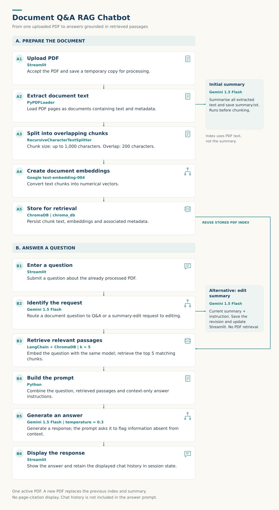

PROJECT / APPLIED AI
Document Q&A RAG Chatbot
Project purpose
Reading a document from beginning to end is not always what someone needs. Sometimes they want an overview; sometimes they need a specific detail or a shorter version of the summary.
I built this assistant to bring those tasks together. A user uploads a PDF, receives a summary, and can then ask questions or request changes through a chat interface.
Tools
Python · Streamlit · LangChain · PyPDFLoader · RecursiveCharacterTextSplitter · ChromaDB · Gemini 1.5 Flash · Google text-embedding-004


Enlarge workflow ↗Preparing the document
The user uploads a PDF through Streamlit and selects Process PDF. The application saves a temporary copy and uses PyPDFLoader to extract its pages as documents containing text and metadata.
The complete extracted text is sent to Gemini 1.5 Flash to generate an initial summary, which is saved to summary.txt.
Making the PDF searchable
I used RecursiveCharacterTextSplitter to divide the extracted PDF text into chunks of up to 1,000 characters, with 200-character overlap. The overlap helps retain information that crosses passage boundaries.
Google text-embedding-004 converts the chunks into numerical vectors. These are stored with the text and associated metadata in a persistent ChromaDB index.
The index is built from the original PDF text, not the generated summary. Questions reuse this stored index without processing the PDF again.
Answering document questions
An LLM-based intent classifier first checks whether the user is asking a document question or requesting a summary change.
For a question, the retriever uses the same embedding model to search ChromaDB and return the five most relevant chunks. Their text is combined with the question and instructions telling the model to answer only from the supplied context.
Gemini 1.5 Flash, configured with temperature=0.3, generates the response. The prompt also asks it to say when the information cannot be found in the provided context.
The answer appears in the Streamlit chat interface.
Refining the summary
For a summary-edit request, the application sends the current summary and user instruction to Gemini. The revised summary is saved and returned to the interface.
This is a separate workflow from document Q&A: it does not retrieve PDF passages. Users can also edit the summary directly in the Summary tab.
Keeping the interaction consistent
- Persistent storage: ChromaDB retains the document index for subsequent questions.
- Session state: Streamlit preserves the current summary, retriever, and displayed chat history between interface updates.
- Fallback routing: If the intent response cannot be parsed, the application defaults to document Q&A.
- Document replacement: Processing a new PDF clears the previous index and saved summary.
Outcome and evaluation
The result was a single-document prototype combining summarisation, retrieval-based Q&A, and summary editing.
I also included an evaluation script using BLEU, ROUGE, and METEOR to compare generated outputs with reference answers for a sample contract across the three tasks.
These comparisons provide a starting point. A fuller evaluation would check whether the correct passages were retrieved, whether answers were supported by those passages, and whether the assistant handled unanswered questions appropriately.
Limitations
- One active PDF: Multi-document search is not implemented.
- Source visibility: Answers do not display page-level citations.
- Conversation context: Chat history is displayed but is not passed into the answer-generation prompt.
- Answer reliability: Context instructions guide the model but do not guarantee correct answers.
- Large documents: Full-text summarisation may encounter model context limits.
- Evaluation evidence: Saved metric results and measured search-time savings are not available.
What I would improve
- Source citations: Display the supporting page numbers and passages alongside answers.
- Retrieval testing: Check whether known relevant passages appear among the retrieved results.
- Answer evaluation: Assess correctness, grounding, and responses to questions the PDF cannot answer.
- Larger-document handling: Introduce staged summarisation and compare chunking strategies.
- Broader use: Add document isolation, access controls, and multi-document support before expanding beyond the prototype.
Business value and learning
The same workflow could support people working with reports, manuals, or internal guidance by combining a quick overview with targeted questions.
What interested me most was how much of the work happened around the language model: preparing the text, retrieving useful passages, preserving state, and deciding which workflow a request should follow.